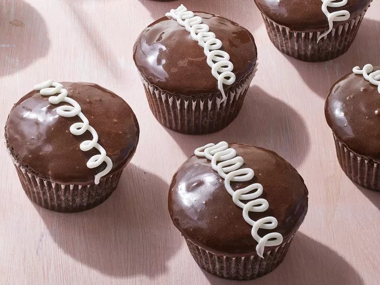

Hostess Cupcakes

Chocolate Cupcakes recipe
Ingredients
- 3 cups flour
- 3 cups white sugar
- 1 cup unsweetened cocoa powder
- 2 teaspoons baking soda
- 1 teaspoon salt
- 2 large eggs
- 1 cup milk
- 1 cup vegetable oil
- 1 cup water
- 1 teaspoon vanilla extract
Steps
- Pre heat the oven to 375 F. Line 36 muffin cups with paper cups
- Whisk together flour, white sugar, cocoa, baking soda, and salt in a large bowl. Add eggs, milk, oil, water, and vanilla extract. Mix with an electric mixer at low speed until smooth, about 2 minutes. Fill prepared muffin cups a little over half full.
- Bake until a toothpick inserted in centers comes out clean, 18 to 22 minutes. Tranfer from pans to wire racks to cool completely
- Meanwhile, for the filling, combine powdered sugar, butter, shortening, milk, vanilla extract, and pinch salt in another large bowl. Using clean beaters, mix with an electric mixer at high speed untill fluffy, about 5 minutes. Insert a large round tip into a pastry bag; fill with filling. Push tip through top of each cooled cupcake to fill; wipe excess frosting off to create a smooth top.
- Frost tops with chocolate frosting. Insert a small round tip into a clean pastry bagg; fill with vanilla frosting. Pipe frosting across tops of cupcakes in loops. Transfer cupcakes to an airtight container. Store a room temprature up to 3 days or freeze up to 3 months/